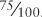
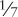

Numbers are numbers, and in most of our daily lives we drift casually between whole numbers, fractions, and percentages. We buy half a carton of eggs and pay 8 ¼ percent sales tax with money earned getting time-and-a-half for working 2 ¾ hours overtime. Most people are fairly comfortable—if not necessarily proficient—with numbers such as these. We can even hear a statistic like "the average American house-hold has 2.6 people" without gasping in horror at the widespread mutilation that must have occurred to achieve this.
Yet this interchange between whole numbers and fractions isn't so casual when it comes to computer memory. Yes, everything is stored in computers in the form of bits, which means that everything is stored as binary numbers. But some kinds of numbers are definitely easier to express in terms of bits than others.
We began using bits to represent what mathematicians call the positive whole numbers and what computer programmers call the positive integers. We've also seen how two's complements allow us to represent negative integers in a way that eases the addition of positive and negative numbers. The table on the following page shows the range of positive integers and two's-complement integers for 8, 16, and 32 bits of storage.
Number of Bits |
Range of Positive Integers |
Range of Two's-Complement Integers |
|---|---|---|
8 |
0 through 255 |
–128 through 127 |
16 |
0 through 65,535 |
–32,768 through 32,767 |
32 |
0 through 4,294,967,295 |
–2,147,483,648 through 2,147,483,647 |
But that's where we stopped. Beyond whole numbers, mathematicians also define rational numbers as those numbers that can be represented as a ratio of two whole numbers. This ratio is also referred to as a fraction. For example, ¾ is a rational number because it's the ratio of 3 and 4. We can also write this number in decimal fraction, or just decimal, form: 0.75. When we write it as a decimal, it really indicates a fraction, in this case 
You'll recall from Chapter 7 that in a decimal number system, digits to the left of the decimal point are multiples of integral powers of ten. Similarly, digits to the right of the decimal point are multiples of negative powers of ten. In Chapter 7, I used the example 42,705.684, showing first that it's equal to
| 4 x 10,000 + |
| 2 x 1000 + |
| 7 x 100 + |
| 0 x 10 + |
| 5 x 1 + |
| 6 ÷ 10 + |
| 8 ÷ 100 + |
| 4 ÷ 1000 |
Notice the division signs. Then I showed how you can write this sequence without any division:
| 4 x 10,000 + |
| 2 x 1000 + |
| 7 x 100 + |
| 0 x 10 + |
| 5 x 1 + |
| 6 x 0.1 + |
| 8 x 0.01 + |
| 4 x 0.001 |
And finally here's the number using powers of ten:
| 4 x 104 + |
| 2 x 103 + |
| 7 x 102 + |
| 0 x 101 + |
| 5 x 100 + |
| 6 x 10-1 + |
| 8 x 10-2 + |
| 4 x 10-3 |
Some rational numbers aren't so easily represented as decimals, the most obvious being ⅓. If you divide 3 into 1, you'll find that ⅓ is equal to
| 0.3333333333333333333333333333333333333333333333333333… |
and on and on and on. It's common to write this more concisely with a little bar over the 3 to indicate that the digit repeats forever:
Even though writing ⅓ as a decimal fraction is a bit awkward, it's still a rational number because it's the ratio of two integers. Similarly,  is
| 0.1428571428571428571428571428571428571428571428571428571… |
or
Irrational numbers are monsters such as the square root of 2. This number can't be expressed as the ratio of two integers, which means that the decimal fraction continues indefinitely without any repetition or pattern:
The square root of 2 is a solution of the following algebraic equation:
| x2 – 2 = 0 |
If a number is not a solution of any algebraic equation with whole number coefficients, it's called a transcendental. (All transcendental numbers are irrational, but not all irrational numbers are transcendental.) Transcendental numbers include π, which is the ratio of the circumference of a circle to its diameter and which is approximately
| 3.1415926535897932846264338327950288419716939937511… |
Another transcendental number is e, which is the number that this expression approaches:
as n gets very large, or approximately
| 2.71828182845904523536028747135266249775724709369996… |
All the numbers we've been talking about so far—rational numbers and irrational numbers—are called real numbers. This designation distinguishes them from the imaginary numbers, which are square roots of negative numbers. Complex numbers are combinations of imaginary numbers and real numbers. Despite their name, imaginary numbers do show up in the real world and are used (for example) in solving some advanced problems in electronics.
We're accustomed to thinking of numbers as continuous. If you give me two rational numbers, I can give you a number between those two numbers. In practice, all I have to do is take an average. But digital computers can't deal with continuums. Bits are either 0 or 1, with nothing in between. So by their very nature, digital computers must deal with discrete values. The number of discrete values you can represent is directly related to the number of bits you have available. For example, if you choose to store positive integers using 32 bits, the values that you can store are the whole numbers from 0 through 4,294,967,295. If you need to store the value 4.5, you must rethink your approach and do something different.
Can fractional values be represented in binary? Yes they can. The easiest approach is probably binary-coded decimal (BCD). As you might remember from Chapter 19, BCD is a binary coding of decimal numbers. Each decimal digit (0, 1, 2, 3, 4, 5, 6, 7, 8, and 9) requires 4 bits, as shown in the following table:
Decimal Digit |
Binary Value |
|---|---|
0 |
0000 |
1 |
0001 |
2 |
0010 |
3 |
0011 |
4 |
0100 |
5 |
0101 |
6 |
0110 |
7 |
0111 |
8 |
1000 |
9 |
1001 |
BCD is particularly useful in computer programs that work with money amounts in dollars and cents. Banks and insurance companies are just two obvious industries that deal with money a lot; in computer programs used by these sorts of companies, many of the fractional numbers require just two decimal places.
It's common to store two BCD digits in 1 byte, a system that's sometimes called packed BCD. Two's complements aren't used with BCD. For this reason, packed BCD also usually requires an extra bit to indicate whether the number is positive or negative. This is called the sign bit. Because it's convenient to have a particular BCD number stored in a whole number of bytes, that one little sign bit usually involves sacrificing 4 bits or 8 bits of storage.
Let's look at an example. Suppose the amounts of money that your computer program needs to work with never get as high as $10 million in either the positive or negative direction. In other words, you only need to represent money values ranging from –9,999,999.99 through 9,999,999.99. You can do that by using 5 bytes for every dollar amount you need to store in memory. For example, the amount –4,325,120.25 is represented by the 5 bytes
| 00010100 00110010 01010001 00100000 00100101 |
or, in hexadecimal:
| 14h 32h 51h 20h 25h |
Notice the nibble at the far left is 1 to indicate a negative value. That's the sign bit. It would be 0 if the number were positive. All the digits in the number require 4 bits each, and you can read them directly from the hexadecimal values.
If you needed instead to represent values from –99,999,999.99 through 99,999,999.99, you'd need 6 bytes—5 bytes for the 10 digits and a whole byte just for the sign bit.
This type of storage and notation is also called fixed-point format because the decimal point is always fixed at a particular number of places—in our example, at two decimal places. Notice that there's nothing actually stored along with the number that indicates the position of the decimal point. Programs that work with numbers in fixed-point format must know where the decimal point is. You can create fixed-point numbers with any number of decimal places, and you can mix and match these numbers in the same computer program. But any part of the program that does arithmetic on the numbers has to know where the decimal points are.
Fixed-point format works well only if you know that numbers aren't going to get too large for the memory location that you've mapped out and that you won't need more decimal places. Where fixed-point format utterly fails is in situations in which numbers can get very large or very small. Suppose you need to reserve an area of memory where you can store certain distances in units of feet. The problem is that these distances can range all over the place. The distance from the earth to the sun is 490,000,000,000 feet, and the radius of the hydrogen atom is 0.00000000026 feet. You'd need 12 bytes of fixed-point storage to accommodate values that can get as large and as small as these.
We can probably work out a better way of storing numbers such as these if we recall that scientists and engineers enjoy specifying numbers using a system called scientific notation. Scientific notation is particularly useful for representing very large and very small numbers because it incorporates a power of ten that allows us to avoid writing out long strings of zeros. In scientific notation, the number
| 490,000,000,000 |
is written
| 4.9 x 1011 |
and the number
| 0.00000000026 |
is written
| 2.6 x 10-10 |
In these two examples, the numbers 4.9 and 2.6 are called the fraction part, or the characteristic, or sometimes (although this word is more properly used in conjunction with logarithms) the mantissa. But to be more in tune with the terminology used with computers, I'm going to call this part of scientific notation the significand.
The exponent part is the power to which 10 is raised. In the first example, the exponent is 11; and in the second example, the exponent is –10. The exponent tells you how many places the decimal point has been moved in the significand.
By convention, the significand is always greater than or equal to 1 and less than 10. Although the following numbers are the same,
| 4.9 x 1011 = 49 x 1010 = 490 x 109 = 0.49 x 1012 = 0.049 x 1013 |
the first is preferred. That's sometimes called the normalized form of scientific notation.
Notice that the sign of the exponent indicates only the magnitude of the number and not whether the number itself is negative or positive. Here are two examples of negative numbers in scientific notation:
| –5.8125 x 107 |
is equal to
| –58,125,000 |
and
| –5.8125 x 10-7 |
is equal to
| –0.00000058125 |
In computers, the alternative to fixed-point notation is called floating-point notation, and the floating-point format is ideal for storing small and large numbers because it's based on scientific notation. But the floating-point format as used in computers employs binary numbers written in scientific notation. The first thing we have to figure out is what fractional numbers look like in binary.
This is actually easier than it might first seem. In decimal notation, digits to the right of the decimal point represent negative powers of ten. In binary notation, digits to the right of the binary point (which is simply a period and looks just like a decimal point) represent negative powers of two. For example, this binary number
| 101.1101 |
can be converted to decimal using this formula:
| 1 x 4 + |
| 0 x 2 + |
| 1 x 1 + |
| 1 ÷ 2 + |
| 1 ÷ 4 + |
| 0 ÷ 8 + |
| 1 ÷ 16 |
The division signs can be replaced with negative powers of two:
| 1 x 22 + |
| 0 x 21 + |
| 1 x 20 + |
| 1 x 2-1 + |
| 1 x 2-2 + |
| 0 x 2-3 + |
| 1 x 2-4 |
Or the negative powers of two can be calculated by starting at 1 and repeatedly dividing by 2:
| 1 x 4+ |
| 0 x 2+ |
| 1 x 1+ |
| 1 x 0.5+ |
| 1 x 0.25+ |
| 0 x 0.125+ |
| 1 x 0.0625 |
By this calculation, the decimal equivalent of 101.1101 is 5.8125.
In decimal scientific notation, the normalized significand should be greater than or equal to 1 but less than 10. Similarly, the normalized significand of numbers in binary scientific notation is always greater than or equal to 1 but less than binary 10, which is 2 in decimal. So in binary scientific notation, the number
| 101.1101 |
is expressed as
| 1.011101 x 22 |
One interesting implication of this rule is that a normalized binary floating-point number always has a 1 and nothing else at the left of the binary point.
Most contemporary computers and computer programs that deal with floating-point numbers use a standard established by the IEEE (the Institute of Electrical and Electronics Engineers) in 1985, a standard also recognized by ANSI (the American National Standards Institute). ANSI/IEEE Std 754-1985 is called the IEEE Standard for Binary Floating-Point Arithmetic. It's not very lengthy as standards go—just 18 pages—but gives the basics of encoding binary floating-point numbers in a convenient manner.
The IEEE floating-point standard defines two basic formats: single precision, which requires 4 bytes, and double precision, which requires 8 bytes.
Let's look at the single-precision format first. It has three parts: a 1-bit sign (0 for positive and 1 for negative), an 8-bit exponent, and a 23-bit significand fraction arranged like this, with the least-significant bits on the right:
s = 1-Bit Sign |
e = 8-Bit Exponent |
f = 23-Bit Significand Fraction |
That's a total of 32 bits, or 4 bytes. Because the significand of a normalized binary floating-point number always has a 1 to the left of the binary point, that bit is not included in the storage of floating-point numbers in the IEEE format. The 23-bit fractional part of the significand is the only part stored. So even though only 23 bits are used to store the significand, the precision is said to be 24 bits. We'll get a feel for what 24-bit precision means in a moment.
The 8-bit exponent part can range from 0 through 255. This is called a biased exponent, which means that you must subtract a number—called the bias—from the exponent in order to determine the signed exponent that actually applies. For single-precision floating-point numbers, this bias is 127.
The exponents 0 and 255 are used for special purposes that I'll describe shortly. If the exponent ranges from 1 through 254, the number represented by particular values of s (the sign bit), e (the exponent), and f (the significand fraction) is
| (–1)s x 1.f x 2e-127 |
That negative 1 to the s power is a mathematician's annoyingly clever way of saying, "If s is 0, the number is positive (because anything to the 0 power equals 1); and if s is 1, the number is negative (because –1 to the 1 power is –1)."
The next part of the expression is 1.f, which means a 1 followed by a binary point, followed by the 23 bits of the significand fraction. This is multiplied by 2 to a power. The exponent is the 8-bit biased exponent stored in memory minus 127.
Notice that I haven't mentioned any way to express a very common number that we seem to have forgotten about, namely 0. That's one of the special cases, which are these:
| (–1)s x 0.f x 2-127 |
The smallest normalized positive or negative binary number that can be represented in single-precision floating-point format is
| 1.00000000000000000000000TWO x 2-126 |
That's 23 binary zeros following the binary point. The largest normalized positive or negative number is that can be represented in single-precision floating-point format is this:
| 1.11111111111111111111111TWO x 2127 |
In decimal, these two numbers are approximately 1.175494351 x 10-38 and 3.402823466 x 1038. That's the effective range of single-precision floating-point notation.
You might recall that 10 binary digits are approximately the same as 3 decimal digits. By that I mean that 10 bits set to 1, which is 3FFh in hexadecimal and 1023 in decimal, is approximately equal to 3 decimal digits set to 9, or 999. Or
| 210 ≈ 103 |
This relationship implies that the 24-bit binary number stored in single-precision floating-point format is roughly the equivalent of 7 decimal digits. For this reason, it's said that the single-precision floating-point format offers a precision of 24 bits, or about 7 decimal digits. What does this mean?
When we were looking at fixed-point numbers, it was obvious how accurate the numbers were. For amounts of money, for example, a fixed-point number with two decimal places is obviously accurate to the nearest penny. But with floating-point numbers, we can't say something like that. Depending on the value of the exponent, sometimes a floating-point number can be accurate to a tiny fraction of a penny, and sometimes it's not even accurate to the nearest dollar.
It's more appropriate to say that a single-precision floating-point number is accurate to 1 part in 224, or 1 part in 16,777,216, or about 6 parts in a million. But what does this really mean?
For one thing, it means that if you try to represent both 16,777,216 and 16,777,217 as single-precision floating-point numbers, they'll end up being identical! Moreover, any number between those two (such as 16,777,216.5) is also considered to be identical. All three of these decimal numbers are stored as the 32-bit single-precision floating-point value
| 4B800000h |
which, divided into the sign, exponent, and significand bits, looks like this:
| 0 10010111 00000000000000000000000 |
which is the number
| 1.00000000000000000000000TWO x 224. |
The next-highest significand is the binary floating-point number that represents 16,777,218 or
| 1.00000000000000000000001TWO x 224 |
It might or might not be a problem that two different decimal numbers end up being stored as identical floating-point values.
But if you were writing a program for a bank, and you were using single-precision floating-point arithmetic to store dollars and cents, you probably would be deeply disturbed to discover that $262,144.00 is the same as $262,144.01. Both these numbers are
| 1.00000000000000000000000TWO x 218. |
That's one reason why fixed-point is preferred when dealing with dollars and cents. When you work with floating-point numbers, you could also discover other little quirks that can drive you mad. Your program will do a calculation that should yield the result 3.50 and instead you get 3.499999999999. This type of thing tends to happen in floating-point calculations, and there isn't a whole lot you can do about it.
If floating-point notation is what you want to use but single-precision doesn't quite hack it, you'll probably want to use double-precision floating-point format. These numbers require 8 bytes of storage, arranged like this:
s = 1-Bit Sign |
e = 11-Bit Exponent |
f = 52-Bit Significand Fraction |
The exponent bias is 1023, or 3FFh, so the number stored in such a format is
| (–1)s x 1.f x 2e-1023 |
Similar rules as those we encountered with single-precision format apply for 0, infinity, and NaN.
The smallest positive or negative double-precision floating-point number is
| 1.0000000000000000000000000000000000000000000000000000TWO x 2-1022 |
That's 52 zeros following the binary point. The largest is
| 1.1111111111111111111111111111111111111111111111111111TWO x 21023 |
The range is decimal in approximately 2.2250738585072014 x 10-308 to 1.7976931348623158 x 10308. Ten to the 308th power is a very big number. It's 1 followed by 308 decimal zeros.
The 53 bits of the significand (including the 1 bit that's not included) is a resolution approximately equivalent to 16 decimal digits. This is much better than single-precision floating-point format, but it still means that eventually some number will equal some other number. For example, 140,737,488,355,328.00 is the same as 140,737,488,355,328.01. These two numbers are both stored as the 64-bit double-precision floating-point value
| 42E0000000000000h |
which decodes as
| 1.0000000000000000000000000000000000000000000000000000TWO x 247 |
Of course, developing a format for storing floating-point numbers in memory is only a small part of actually using these numbers in your assembly-language programs. If you were indeed developing a desert-island computer, you would now be faced with the job of writing a collection of functions that add, subtract, multiply, and divide floating-point numbers. Fortunately, these jobs can be broken down into smaller jobs that involve adding, subtracting, multiplying, and dividing integers, which you already know how to do.
For example, floating-point addition basically requires that you add two significands; the tricky part is using the two exponents to figure out how the two significands mesh. Suppose you needed to perform the following addition:
| (1.1101 x 25) + (1.0010 x 22) |
You need to add 11101 and 10010, but not exactly like that. The difference in exponents indicates that the second number must be offset from the first. The integer addition really requires that you use 11101000 and 10010. The final sum is
| 1.1111010 x 25 |
Sometimes the exponents will be so far apart that one of the two numbers won't even affect the sum. This would be the case if you were adding the distance to the sun and the radius of the hydrogen atom.
Multiplying two floating-point numbers means multiplying the two significands as if they were integers and adding the two integer exponents. Normalizing the significand could result in your decrementing the new exponent once or twice.
Another layer of complexity in floating-point arithmetic involves the calculation of fun stuff such as roots and exponents and logarithms and trigonometric functions. But all of these jobs can be done with the four basic floating-point operations: addition, subtraction, multiplication, and division.
For example, the sine function in trigonometry can be calculated with a series expansion, like this:
The x argument must be in radians. There are 2π radians in 360 degrees. The exclamation point is a factorial sign. It means to multiply together all the integers from 1 through the indicated number. For example, 5! equals 1 x 2 x 3 x 4 x 5. That's just a multiplication. The exponent in each term is also a multiplication. The rest is just division, addition, and subtraction. The only really scary part is the ellipsis at the end, which means to continue the calculations forever. In reality, however, if you restrict yourself to the range 0 through π/2 (from which all other sine values can be derived), you don't have to go anywhere close to forever. After about a dozen terms, you're accurate to the 53-bit resolution of double-precision numbers.
Of course, computers are supposed to make things easy for people, so the chore of writing a bunch of routines to do floating-point arithmetic seems at odds with the goal. That's the beauty of software, though. Once somebody writes the floating-point routines for a particular machine, other people can use them. Floating-point arithmetic is so important to scientific and engineering applications that it's traditionally been given a very high priority. In the early days of computers, writing floating-point routines was always one of the first software jobs when a new type of computer was built.
In fact, it even makes sense to implement computer machine-code instructions that perform floating-point arithmetic directly! Obviously, that's easier to say than to do. But that's how important floating-point calculations are. If you can implement floating-point arithmetic in hardware—similar to the multiply and divide instructions in 16-bit microprocessors—all floating-point calculations done on the machine will be faster.
The first commercial computer that included floating-point hardware as an option was the IBM 704 in 1954. The 704 stored all numbers as 36-bit values. For floating-point numbers, that broke down to a 27-bit significand, an 8-bit exponent, and a sign bit. The floating-point hardware could do addition, subtraction, multiplication, and division. Other floating-point functions had to be implemented in software.
Hardware floating-point arithmetic came to the desktop in 1980, when Intel released the 8087 Numeric Data Coprocessor chip, a type of integrated circuit usually referred to these days as a math coprocessor or a floating-point unit (FPU). The 8087 is called a coprocessor because it couldn't be used by itself. It could be used only in conjunction with the 8086 and 8088, Intel's first 16-bit microprocessors.
The 8087 is a 40-pin chip that uses many of the same signals as the 8086 and 8088 chips. The microprocessor and the math coprocessor are connected by means of these signals. When the CPU reads a special instruction—called ESC for Escape—the coprocessor takes over and executes the next machine code, which indicates one of 68 instructions that include trigonometry, exponents, and logarithms. Data types are based on the IEEE standard. At the time, the 8087 was considered to be the most sophisticated integrated circuit ever made.
You can think of the coprocessor as a little self-contained computer. In response to a particular floating-point machine code instruction (for example, FSQRT to calculate a square root), the coprocessor internally executes its own series of instructions coded in ROM. These internal instructions are called microcode. The instructions generally loop, so the result of the calculation isn't immediately available. Still, however, the math coprocessor is usually at least 10 times faster than the equivalent routines done in software.
The motherboard of the original IBM PC had a 40-pin socket for an 8087 chip right next to the 8088 chip. Unfortunately, this socket was empty. Users who needed the extra floating-point speed had to buy an 8087 separately and install it themselves. Even after installation of the math coprocessor, not all applications could be expected to run faster. Some applications—such as word processors—have very little need for floating-point arithmetic. Others, such as spreadsheet programs, can use floating-point calculation much more, and these programs should run faster, but not all of them did.
You see, programmers had to write specific code for the coprocessor that used the coprocessor's machine-code instructions. Because a math coprocessor wasn't a standard piece of hardware, many programmers didn't bother to do so. After all, they had to write their own floating-point subroutines anyway (because most people didn't have a math coprocessor installed), so it became extra work—not less work—to support the 8087 chip. Eventually, programmers learned to write their applications to use the math coprocessor if it was present on the machine their programs were running on and to emulate it if it wasn't there.
Over the years, Intel also released a 287 math coprocessor for the 286 chip, and a 387 for the 386. But with the release of the Intel 486DX in 1989, the FPU was built right into the CPU itself. No longer was it an option! Unfortunately, in 1991 Intel released a lower-cost 486SX that did not have the built-in FPU and instead offered a 487SX math coprocessor as an option. With the 1993 release of the Pentium, however, the built-in FPU became standard again, perhaps for all time. Motorola integrated an FPU with its 68040 microprocessor, which was released in 1990. Previously Motorola sold 68881 and 68882 math coprocessors to support the earlier microprocessors in the 68000 family. The PowerPC chips also have built-in floating-point hardware.
Although hardware for floating-point arithmetic is a nice gift for the beleaguered assembly-language programmer, it's a rather minor historical advance when compared with some other work that began in the early 1950s. Our next stop: computer languages.